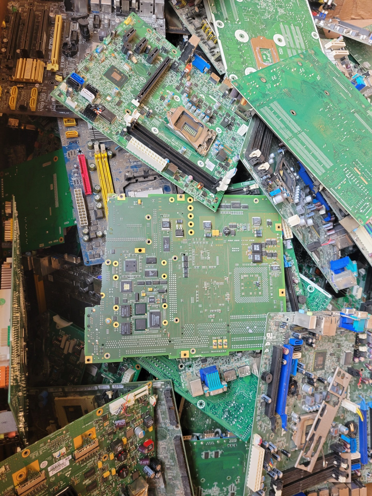

Electronics Recycling
We collect retired computers, servers, phones, networking equipment, monitors, cables, circuit boards and many other electronics.
See accepted equipment →From a few retired laptops to a full warehouse cleanout, CPER combines pickup coordination, data security, reuse, recycling and value recovery in one straightforward process.
We collect retired computers, servers, phones, networking equipment, monitors, cables, circuit boards and many other electronics.
See accepted equipment →
Secure erasure or physical destruction for storage media, with verification and reporting available when required.
Learn about data security →
Inventory, testing, grading, sanitization, resale and documented disposition for business IT refreshes and decommissioning projects.
Explore ITAD →
Working equipment is considered for refurbishment, parts recovery, resale or donation before material recycling.
See our reuse approach →
Eligible reusable devices, components and certain material streams may qualify for purchase or value recovery.
See what we buy →
Equipment that cannot be reused is directed to qualified Canadian downstream processors for responsible commodity recovery.
Ask about your material →
Once equipment is collected, it is sorted and evaluated based on condition, data-security requirements, reuse potential and material value.
Working equipment may be prepared for reuse or value recovery, while end-of-life material is separated for responsible downstream processing.
We tell you what we need up front, keep the handoff straightforward and provide documentation when your organization requires it.
Your city, approximate quantities, equipment types and timing are enough to start. Photos help.
For qualifying projects, we arrange collection and keep equipment accounted for during the handoff.
Data is handled appropriately and equipment is evaluated for reuse, resale, parts recovery, donation or recycling.
Certificates and serialized disposition reporting are available when required.
CPER brings practical experience in electronics recovery, reuse, refurbishment, data-bearing equipment, commodity recovery and end-of-life processing. That experience helps us evaluate mixed loads and recommend the most practical next step instead of forcing every project into the same process.
You do not need a perfect inventory. A rough count, a few model numbers and some photos are usually enough to start.